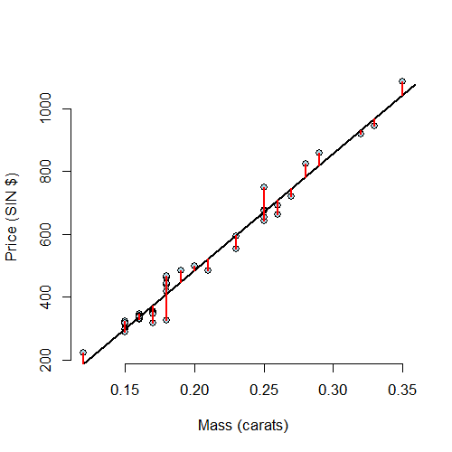

- Model \(Y_i = \beta_0 + \beta_1 X_i + \epsilon_i\) where \(\epsilon_i \sim N(0, \sigma^2)\).
- Observed outcome \(i\) is \(Y_i\) at predictor value \(X_i\)
- Predicted outcome \(i\) is \(\hat Y_i\) at predictor valuve \(X_i\) is \[ \hat Y_i = \hat \beta_0 + \hat \beta_1 X_i \]
- Residual, the between the observed and predicted outcome
\[
e_i = Y_i - \hat Y_i
\]
- The vertical distance between the observed data point and the regression line
- Least squares minimizes \(\sum_{i=1}^n e_i^2\)
- The \(e_i\) can be thought of as estimates of the \(\epsilon_i\).
Residuals and residual variation
Brian Caffo, Jeff Leek and Roger Peng
Johns Hopkins Bloomberg School of Public Health
Residuals
Properties of the residuals
- \(E[e_i] = 0\).
- If an intercept is included, \(\sum_{i=1}^n e_i = 0\)
- If a regressor variable, \(X_i\), is included in the model \(\sum_{i=1}^n e_i X_i = 0\).
- Residuals are useful for investigating poor model fit.
- Positive residuals are above the line, negative residuals are below.
- Residuals can be thought of as the outcome (\(Y\)) with the linear association of the predictor (\(X\)) removed.
- One differentiates residual variation (variation after removing the predictor) from systematic variation (variation explained by the regression model).
- Residual plots highlight poor model fit.
Code
data(diamond)
y <- diamond$price; x <- diamond$carat; n <- length(y)
fit <- lm(y ~ x)
e <- resid(fit)
yhat <- predict(fit)
max(abs(e -(y - yhat)))
[1] 9.486e-13
max(abs(e - (y - coef(fit)[1] - coef(fit)[2] * x)))
[1] 9.486e-13
Residuals are the signed length of the red lines

Residuals versus X

Non-linear data
x <- runif(100, -3, 3); y <- x + sin(x) + rnorm(100, sd = .2);
plot(x, y); abline(lm(y ~ x))

plot(x, resid(lm(y ~ x)));
abline(h = 0)

Heteroskedasticity
x <- runif(100, 0, 6); y <- x + rnorm(100, mean = 0, sd = .001 * x);
plot(x, y); abline(lm(y ~ x))

Getting rid of the blank space can be helpful
plot(x, resid(lm(y ~ x)));
abline(h = 0)

Estimating residual variation
- Model \(Y_i = \beta_0 + \beta_1 X_i + \epsilon_i\) where \(\epsilon_i \sim N(0, \sigma^2)\).
- The ML estimate of \(\sigma^2\) is \(\frac{1}{n}\sum_{i=1}^n e_i^2\), the average squared residual.
- Most people use \[ \hat \sigma^2 = \frac{1}{n-2}\sum_{i=1}^n e_i^2. \]
- The \(n-2\) instead of \(n\) is so that \(E[\hat \sigma^2] = \sigma^2\)
Diamond example
y <- diamond$price; x <- diamond$carat; n <- length(y)
fit <- lm(y ~ x)
summary(fit)$sigma
[1] 31.84
sqrt(sum(resid(fit)^2) / (n - 2))
[1] 31.84
Summarizing variation
\[ \begin{align} \sum_{i=1}^n (Y_i - \bar Y)^2 & = \sum_{i=1}^n (Y_i - \hat Y_i + \hat Y_i - \bar Y)^2 \\ & = \sum_{i=1}^n (Y_i - \hat Y_i)^2 + 2 \sum_{i=1}^n (Y_i - \hat Y_i)(\hat Y_i - \bar Y) + \sum_{i=1}^n (\hat Y_i - \bar Y)^2 \\ \end{align} \]
Scratch work
\((Y_i - \hat Y_i) = \{Y_i - (\bar Y - \hat \beta_1 \bar X) - \hat \beta_1 X_i\} = (Y_i - \bar Y) - \hat \beta_1 (X_i - \bar X)\)
\((\hat Y_i - \bar Y) = (\bar Y - \hat \beta_1 \bar X - \hat \beta_1 X_i - \bar Y ) = \hat \beta_1 (X_i - \bar X)\)
\(\sum_{i=1}^n (Y_i - \hat Y_i)(\hat Y_i - \bar Y) = \sum_{i=1}^n \{(Y_i - \bar Y) - \hat \beta_1 (X_i - \bar X))\}\{\hat \beta_1 (X_i - \bar X)\}\)
\(=\hat \beta_1 \sum_{i=1}^n (Y_i - \bar Y)(X_i - \bar X) -\hat\beta_1^2\sum_{i=1}^n (X_i - \bar X)^2\)
\(= \hat \beta_1^2 \sum_{i=1}^n (X_i - \bar X)^2-\hat\beta_1^2\sum_{i=1}^n (X_i - \bar X)^2 = 0\)
Summarizing variation
\[ \sum_{i=1}^n (Y_i - \bar Y)^2 = \sum_{i=1}^n (Y_i - \hat Y_i)^2 + \sum_{i=1}^n (\hat Y_i - \bar Y)^2 \]
Or
Total Variation = Residual Variation + Regression Variation
Define the percent of total varation described by the model as \[ R^2 = \frac{\sum_{i=1}^n (\hat Y_i - \bar Y)^2}{\sum_{i=1}^n (Y_i - \bar Y)^2} = 1 - \frac{\sum_{i=1}^n (Y_i - \hat Y_i)^2}{\sum_{i=1}^n (Y_i - \bar Y)^2} \]
Relation between \(R^2\) and \(r\) (the corrrelation)
Recall that \((\hat Y_i - \bar Y) = \hat \beta_1 (X_i - \bar X)\) so that \[ R^2 = \frac{\sum_{i=1}^n (\hat Y_i - \bar Y)^2}{\sum_{i=1}^n (Y_i - \bar Y)^2} = \hat \beta_1^2 \frac{\sum_{i=1}^n(X_i - \bar X)}{\sum_{i=1}^n (Y_i - \bar Y)^2} = Cor(Y, X)^2 \] Since, recall, \[ \hat \beta_1 = Cor(Y, X)\frac{Sd(Y)}{Sd(X)} \] So, \(R^2\) is literally \(r\) squared.
Some facts about \(R^2\)
- \(R^2\) is the percentage of variation explained by the regression model.
- \(0 \leq R^2 \leq 1\)
- \(R^2\) is the sample correlation squared.
- \(R^2\) can be a misleading summary of model fit.
- Deleting data can inflate \(R^2\).
- (For later.) Adding terms to a regression model always increases \(R^2\).
- Do
example(anscombe)to see the following data.- Basically same mean and variance of X and Y.
- Identical correlations (hence same \(R^2\) ).
- Same linear regression relationship.
data(anscombe);example(anscombe)